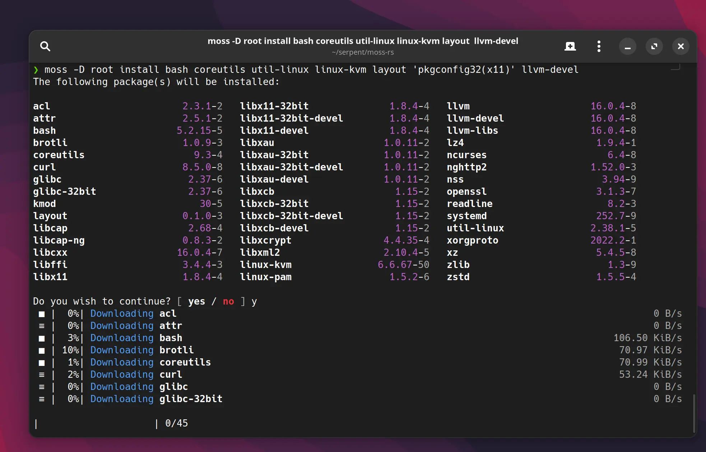
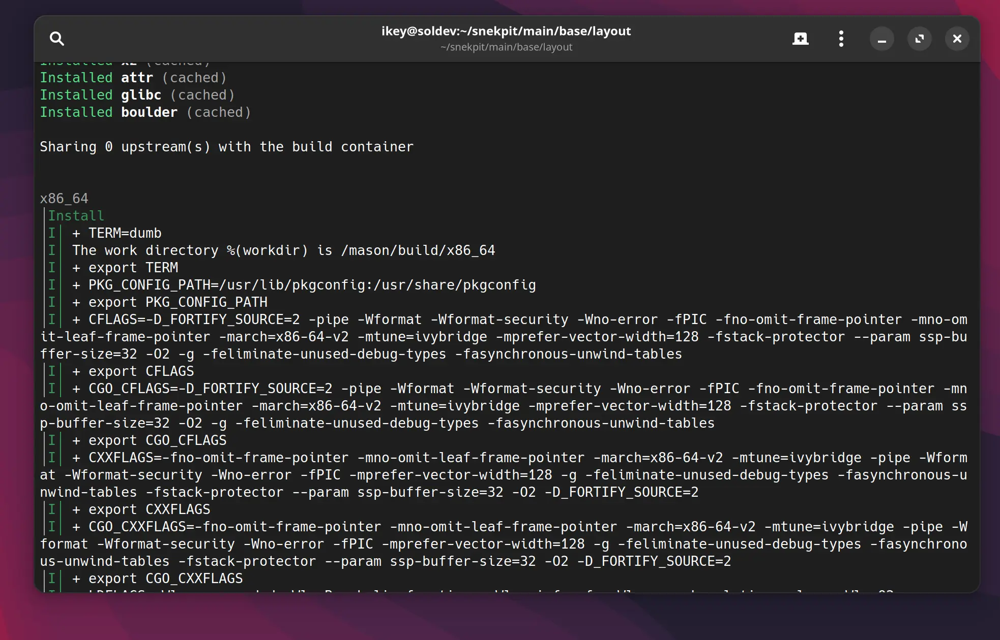

End Of Year Summary
Burning question - how long before we can use Serpent OS on our development systems? It's a fair question - and one that requires context to answer. Let's start our new monthly update cycle with a recap of progress so far.

Introducing tarkah
We'd like to extend a huge official welcome, and thank you, to newest team member Cory Forsstrom (aka tarkah)!
Firstly, a quote from Cory:
I've been a long time Solus user and was very excited about what serpent os was doing. Really got invested once I started diving into the D code and seeing how powerful the tools and ideas were. The Rust rewrite was just a perfect storm for me with my experience there and my desire to make contributions. Getting to know you and ermo has just been icing on the cake, you've both been so welcoming and friendly. So lots of fun times.
On the personal side, I'm on the west coast in the States, have a lovely wife, just had a baby girl and am enjoying my time with fatherhood and coding
Chances are you know tarkah for his contributions to iced-rs, and to Solus. His contributions to the moss-rs project have been absolutely critical, and his patience essential as we got ourselves quickly up to speed with Rust. It is entirely fair to say that our Rust efforts would not have been possible without him!
Rust Progress
I think it is fair to say that people collectively facepalmed when we announced our plans to adopt Rust - assuming this would be a huge set back. We're really happy to report this is not the case, and we've made tremendous progress in this area.
moss
Our Rust based moss system package tool is now leaps and bounds ahead of its predecessor,
supporting the original features and more!
- State management
- Garbage collection of old transactions (via
state prune) - Optimised write order of transactions (see more below)
- File conflict detection
- Parallel fetching and decompression of packages
- Update support (as
sync) - Local and remote repositories with priority-based layering
- Support for building with
muslfor fully self-contained, static builds of moss with zero system dependencies.
We now have a version-agnostic "stone" crate that is more efficient at reading packages than our original D code. In addition, it benefits from the memory safety promises of Rust.
Recap: What is moss?
moss aims to feel like a traditional package manager while offering features typically only found in tools like ostree. It is still package based and offers the same level of granularity and composition as classic package managers while still managing to offer full OS deduplication, offline rollbacks and atomic updates.
At a technical level, we have a custom binary package format that focuses on read performance, deduplication, strong types and error reduction.
Every operation in moss creates an entirely new filesystem tree composed of hard links to content addressable storage (Hash-based) which is
then "promoted" by swapping the host /usr with the staging tree using the renameat2 system call. Phew!
Virtual filesystem management
OK, lets look at the problem: Every transaction in moss requires us to generate a new staging tree containing all of the directories and files for the
/usr tree, using hard links, from content addressable storage. As one might expect, creating tens of thousands of new nodes is really, really slow!
To alleviate this issue we created a vfs crate in moss to optimise how we construct each transaction tree:
- Organise all incoming registered paths into a specific order
- Inject all missing implicitly created directories for accounting
- Re-parent nodes in tree which live under redirected symlinks
- Compile into a recursive data-structure using relative names.
There is a multipart "build" for the tree that detects any filesystem conflicts before any files have been written to disk, preventing broken transactions.
With the fully built data structure we can recurse a virtual filesystem, making use of the at family of functions like linkat, mkdirat, to "blit"
a filesystem tree without requiring any path resolution, in the most efficient order possible.
The net result? New transaction roots are created in milliseconds, not seconds.
Upgrade support - kind of
moss now offers a sync command in place of the conventional upgrade one might expect. Rather than upgrading to the latest version of a package, we
rely on moss and our infrastructure tooling work in conjunction to ensure we can simply synchronize the package selection with the the "tip" candidates
in the configured repositories, as ordered by priority. From a distro-builder PoV, we can now revert and pull builds. For a user PoV, you can remove a test
repository and moss sync to go back to the official versions of packages.
Generally speaking, when you moss sync you will be seeing new packages, however.  This feature is being built to enable a future feature: exported states. Want to try a new edition? Sync to the lockfile. Need to quickly and reproducibly deploy containers from a locked down configuration? You get the idea.
This feature is being built to enable a future feature: exported states. Want to try a new edition? Sync to the lockfile. Need to quickly and reproducibly deploy containers from a locked down configuration? You get the idea.

Fully async
The moss tool is now completely asynchronous, making efficient use of both coroutines and OS threads to perform as much work possible in the shortest space of time. This allows us to download, fetch, check and unpack many packages at the same time without being blocked on network or disk, greatly speeding up the fetch part of a transaction.
This is achieved by building on the famous tokio runtime and reqwest crates, among others.
boulder
At the time of writing our port of boulder hasn't quite yet caught up with the original implementation, given all of the ground we covered with moss. With that said, we decided to step back and evaluate where we could improve upon the first version of boulder.
Recap: What is boulder?
Boulder is the tool we use to generate installable .stone packages from a YAML recipe, stone.yml.
The recipe contains machine-readable metadata in a declarative format, along with "steps" (instructions)
used to build the package.
Leveraging a series of intelligent patterns and helpers, boulder can analyse and collect the build artefacts into the correct subpackages and automatically discover most runtime dependencies, thus vastly decreasing the workload for the developer.

User namespaces (rootless)
Arguably one of the most important changes: boulder no longer requires running as root. Even better, we make use of
user namespaces and execute using clone - meaning we no longer need a separate binary (mason) within the container
environment!
Superior error handling
Thanks to everything being a self-contained binary, we can tell you up front that you're using unknown action or definition
macros (i.e. %(datadir)) before attempting any builds, saving you valuable time.
Breakpoints
When this was first proposed, I did a double take. Breakpoints.. in recipes... ? No, seriously. Not only was it proposed, but between ermo and tarkah, they only went and implemented it. You can now use special macros within your recipe to add debugging breakpoints in your recipe to drop to a shell within the container and debug the more difficult builds!
Our documentation will be updated when the new boulder ships a stable build.
Unified codebase
We now build both moss and boulder from the moss-rs repository, allowing them to share the same code and mechanisms
for dealing with dependencies, system roots, etc., allowing for far higher levels of integration than were previously possible.
A feature we're currently working on allows you to use a single directory for the system "root", where all the unpacking, fetching and databases happen, while almost instantly creating new build roots!
What We Already Have
I get it. "All this rewriting - how will you ever make progress" ? It's a fair question. We didn't throw anything away, quite the opposite. Our repos, tooling, are all still in use enabling us to build the distribution in parallel to the ongoing rewrites.
Build infrastructure
For a long time, we've had our dashboard up and running for our build infrastructure.
Sure, we're going to rewrite it beyond the "Proof of concept" stage when required - but for now it still serves us well. Admittedly there is
a deep issue within the druntime causing thread leaks over time, but we have it restarting via systemd every 24 hours as a bandaid. Needless
to say, we're big fans of memory safety now.
Our current deployment watches git repos in our snekpit collection, and automatically forms build
queues from the pending builds, ordering them by dependency. Using two of ermo's beefy builders, the packages are automatically built and deployed
to our repository. Our workflow means that maintainers only have to merge a pull request for builds to appear in the volatile repository.
Legacy tooling
Despite having some warts, the build infrastructure is still able to use legacy moss and boulder to make our new builds available, and we've
been minimally patching these old tools to support our transition to the Rust based tooling. As of this moment, moss-rs officially supercedes
the D version, and our new boulder is quickly catching up.
Long story short, we're still building on all fronts and aren't blocked anywhere.
Live repository
Builds are published to our volatile repository, and we do have a fully functioning software repository despite being quite small. Once we're
happy with the new moss we'll speed up in our packaging efforts. With that said, we do have two kernels (kvm and desktop) and even gtk-4
at this early stage!
The immediate future
OK let's tldr this:
- Rust ports are coming along fantastically
- moss has been replaced
- still making use of existing tools and infrastructure to build the OS
- actually building the fully bootstrapped, self-contained OS, built on libc++, clang, glibc, etc.
- actively pushing updates to binary repository with fully automated pipeline
- new stuff is
 blazing fast
blazing fast
System triggers
We're experimenting with system triggers right now, execution units that run to fully bake the OS state after each transaction completes. In keeping
with our stateless philosophy (and pending adoption of hermetic /usr), we need triggers that understand the union state of the operating system, not
individual per-package triggers.
A YAML-based trigger recipe has been baked up, which deliberately avoids the use of shell helpers and execution security weaknesses by using an extended variant of globs:
Our new fnmatch crate, heavily inspired by Python fnmatch, compiles specially format glob strings to Regex, extending with capture groups for named variables. In YAML, it looks a bit like this:
handlers:
depmod:
run: /sbin/depmod
args: ["-a", "$(version)"]
# Link paths to handlers and filter on the type
paths:
"/usr/lib/modules/(version:*)/kernel" :
handlers:
- depmod
type: directory
Once we roll out the trigger support, we unblock the packaging of critical items like gtk-3 for gdm, as well as enable usable installations and ISOs.
Note that they differ from classical triggers due to the architecture of moss: they need to run in an isolated namespace (container) so we can ensure
the staged transaction won't break. Additionally we cache and collect the trigger artefacts to speed up each filesystem operation, giving us a first:
versioned state artefacts.
Boot management
Our plan is to build on my prior work in the Solus boot management design and clr-boot-manager, addressing some long standing shortcomings. Most importantly, our new module will not need to inspect or manage the OS filesystem
as moss will be able to provide all of the relevant information (full accounting for all used paths in all transactions).
Initially we will focus on UEFI and supporting the Discoverable Partitions Specification by way of XBOOTLDR partitions, the ESP and the Boot Loader Interface. Currently we have no plans to support Unified Kernel Images as the approach taken by CBM (and soon, moss) alleviates the
data concerns of dealing with vfat. However, as and when UKIs gain configurable, standardised behaviour for cmdline control we will investigate their
use. Until that point please note we prebuild our initrd images and ship them directly in our packages, as Solus has done so for years already.
The net gain for taking control of boot management will be the deduplication and garbage collection of assets installed to either the ESP or XBOOTLDR
partitions, along with generation of boot entries relevant to Serpent OS: Transaction specific entries allowing us to directly boot back to older installs
in case upgrades go wrong.
Last, but certainly not least, this approach will make dual-booting with another OS less irritating by no longer being bound by a fixed ESP size.
Desktop
Our plan is to produce a GNOME Shell based live ISO containing the bare basics to get everything else validated, and open the path to installations. In short, it will include:
- Desktop.
- moss tooling
- web browser (firefox)
- terminal (potentially
gnome-console) - flatpak
- Eventually: GNOME Software (integrated with flatpak+moss)
It should be obvious we're not building a general purpose home-use distribution. However, we also won't stop people using Serpent OS for their needs, and we plan to beef up the repository, fully support flatpak and eventually custom moss source recipe repos. (ala AUR)
Safety is important
Our journey over the last few years through D, DIP1000, Rust and memory safety has been incredibly eye opening for us. To our own surprise, memory safety has become a huge interest and concern for the team. Not only have we embarked on a full transition of our tooling to Rust, we've started looking at the OS itself.
As an early indication of our intent, our curl package is now built with the rustls backend and not OpenSSL. Needless to say, we're very keen to reduce the surface area for attacks by
adopting alternative, safer implementaions where possible. Other projects we're keeping a very close eye on include:
Looking to next year
With most of us entering our holiday leave, and the new year practically around the corner, the Serpent OS team wishes you many happy returns and a wonderful new year. With one blocker being worked on (triggers), and the last on the horizon (boot management), your dream installation of Serpent OS is firmly within reach.
In the spirit of the season..... if you feel like supporting our project, you can help with the rising cost of living and our expanding hosting requirements via GitHub Sponsors!